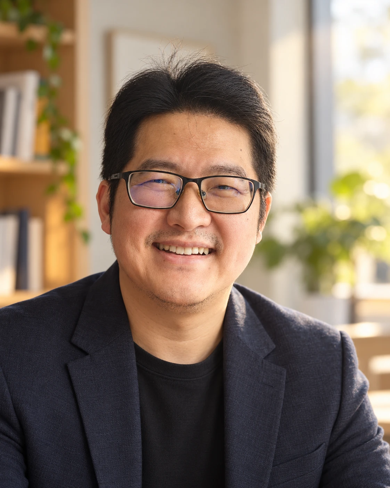

Mathematician · Technology Innovator · Speaker
Helping people build an intentional relationship with technology
“As technology becomes smarter, how can we become wiser humans?”
The mission
I help people build an intentional relationship with technology — so it serves their values rather than competing with them. Not through restriction, but through awareness, agency, and small experiments people can run on their own lives.
I spent over a decade as a software engineer, including leading real-time systems, after a PhD in Mathematics. I've always been a problem solver at heart: someone who wants to understand how something actually works, from first principles, before deciding what to build. I know how deliberately technology is engineered to capture attention, because I've been inside the machine that builds it.
A career transition gave me the space to ask a different question: not how to make technology faster or smarter, but how to help people stay in charge of their own attention as it does. That question is what I'm building a company, and a body of work, around.
Speaking topics
Practical experiments to build more intentional technology habits.
Simple ways to strengthen the parent–child connection.
Preserving human agency and wisdom as AI grows more capable.
Approach — grounded science, personal storytelling, and simple experiments audiences can try that same evening.
Outcome — audiences leave with one small, low-effort experiment to reset their attention.
What I'm testing, on myself first
Before I ask anyone else to change their relationship with their phone, I test the idea on my own life. One early experiment: logging exactly what I wanted my phone for and for how long, then locking myself out for an equal stretch afterward — no exceptions.
It changed small things immediately. One evening, my daughter wanted to know if it was a good time to go play with a neighbour's daughter, and I was the only one in the house with a phone. While I explained the log and the timer to her, she got curious enough to think it through herself — and worked out, on her own, that a quick call would get her a faster answer than a text, given the window she actually had. We called. She got her answer with about a minute to spare, and I was left holding a phone I'd already promised to keep dark for five more minutes.
Small moment. But it's exactly the kind of evidence I'm collecting — not theory about attention, lived proof of what changes when a phone becomes a tool again instead of a habit. Read the full story →